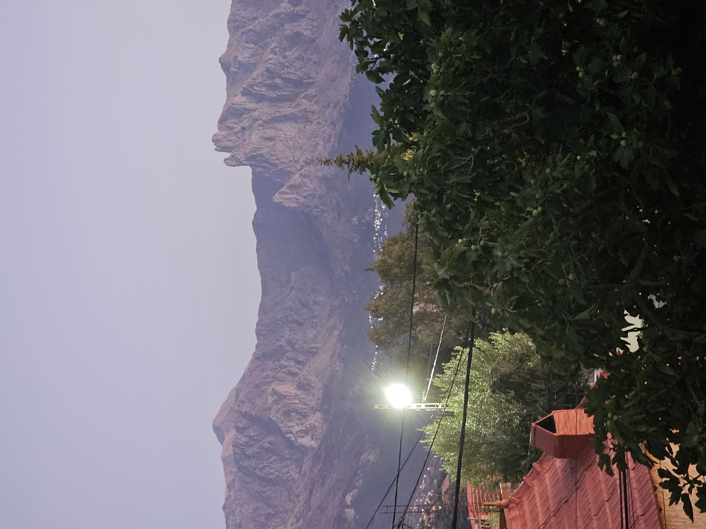

Le recueil · Poésie

Temps et existence · Résilience et espoir
Auteur : Djamel Metref · Date : 28 septembre 2026 · Lieu : At Yenni
Liberté et justice
Auteur : Djamel Metref · Date : 26 septembre 2026
Résilience et espoir
Mémoire et transmission · Écriture et poésie
Auteur : Djamel Metref · Date : 23 septembre 2026 · Lieu : At Yenni